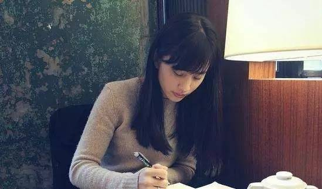

|
||||
| 布 客 街 | 分 享 汇 | LOVE SHOW | 关 于 小 站 |
|
| 杀死林奕含的，除了老师性侵，还有…… | 林奕含自杀前8天拍的采访视频。我一遍遍地看，看完，拉回去又看。我看，一遍遍看，眼睛疼，有些模糊。我又看，再看一遍，好像这样她还活着，没有离开。 | |
 |
我的眼睛肯定又红又肿。房间有东西倒下了，玻璃碎裂，洒了一地。我急忙直起身，撞到坚硬的桌角。血一点一点，濡湿了白色衬衫。我听见一小块蹭掉的皮肤落下的声音。 一夜无眠，心情down到谷底，行尸走肉般游荡到楼下的沙龙。剪短长发、烫出波浪、染上颜色，内心难以克制的恶意一扫而空。 她刚出版小说《房思琪的初恋乐园》。“这个故事可以用两三句话讲完”，她说，“用很直观、很直白、很残忍的话，就是有一个老师，长年用他老师的职权，诱奸、强暴、性虐待女学生”。 当有人问她，小说里的房思琪是你吗？她说不是。她自杀后，她的父母说，她把自己被性侵的经历分别用在了4个角色上，房思琪只是其中一个。 她说，“这么大质量的暴力，绝不可能再现。”所以，她把暴力分成了4份，这样就显得轻一些。轻，不是她心里的份量。而是她希望，这是落在别人心中的份量。自己的痛，不成为别人的惊扰。 暴力留下的最深烙印，不在肉体上，而是对受害者的精神驯服。 无尽的自责令她把自己的经历和集中营联系在一起。她提到莱维，因为他书写暴行的“灰色地带”，被害者配合施暴者的计划。她把自己比做奥斯维辛幸存者，因为很多犹太人走出集中营很多年后才自杀。屈辱，会在暴力不存在后，令自己充当自己的刽子手。 她说，写书是“叩问”。但诞生于叩问的作家，往往死于无人应答。 “她写书的目的是为了社会上不要再有第二个房思琪，希望天下的父母、善良的男孩、女孩和男人，都能用温柔和温暖的心灵来一起保护房思琪们。” 这还不够。林爸爸接着又发了消息，“轻轻地诚挚地拜托大家”，“请记住她的遗愿，是预防”，“而不是追究任何个人。” 林奕含的感受是对的，她像生活在集中营里，一步一步地走向毒气室。 暴力之后，是怯懦与伪善毒杀了她。 |
|
| 你们难道不想长生不老？ | 成为仙风道骨的神仙那年，我5岁左右，之所以记得这么清楚就是因为故事背景发生在学前班，内蒙古高原上的学前班。记得那时候的大院子里有一个很大的水泥花坛，是小朋友每日课间休息插科打诨的好去处，春光暖洋洋，照在一个个鼻涕流满脸的小朋友脸上，而我，在其中一个课间，走上了神坛。 | |
 |
九几年的时候，勤俭持家但是爱臭美的妈妈们都会是用一种东西来粘补她们的各色丝袜，这个东西叫做粘袜灵。是一个盖子上面接着一个沾棒的小玻璃瓶。每次使用的时候，只要用小沾棒沾出来一点胶水点涂在丝袜上就可以有效防止钩坏的丝袜继续抽丝，从而达到一个袜子即使破了好几个小洞，粘粘还能穿的目的。 我奶奶开小卖店，粘袜灵的市场需求被她错误的高估了，囤货太多，眼看一批马上要过期了，赶紧分发给了五个爱臭美的儿媳，每人有十几罐之多。我妈把它们放在阳台上，整整齐齐一小排，在阳光的照耀下熠熠生辉。 那个课间，我像个王，站在水泥花池边上，大声的像小伙伴们嘶吼着：我得道成仙了，玉皇大帝给我了长生不老药，让我下凡造福人间，现在你们都要听我的！来排队领药！！！院子里实在太过嘈杂，没人鸟我，所以我又跳下花池，挨个拍打小朋友们，再次复述你们快来找我领药，过村没店，因为我发完药要回天宫去了。 |
|